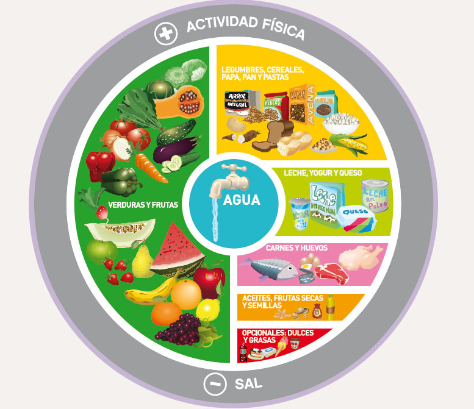

10 consejos para una buena alimentación
NO TE DEJES GANAR POR LAS EXCUSAS
Aquí te presentamos 10 consejos clave para llevar una alimentación equilibrada y saludable:
- Consume una gran variedad de alimentos para obtener todos los nutrientes que tu cuerpo necesita.
- Come frutas y verduras frescas todos los días.
- Elige alimentos integrales en lugar de refinados.
- Modera el consumo de grasas y elige grasas saludables como las del aceite de oliva y los frutos secos.
- Reduce el consumo de sal y azúcares añadidos.
- Hidrátate adecuadamente, bebiendo suficiente agua a lo largo del día.
- Modera las porciones para evitar comer en exceso.
- Evita el consumo de alimentos ultraprocesados y altos en sodio.
- Realiza actividad física regularmente como complemento de una dieta saludable.
- Disfruta de la comida en un ambiente relajado y sin distracciones.
Para más información sobre cómo mantener una alimentación saludable, visita Alimentacion Saludable BS.AS.
Gráfica de la Alimentación Diaria para la población Argentina
Ministerio de Salud de la Nación.
